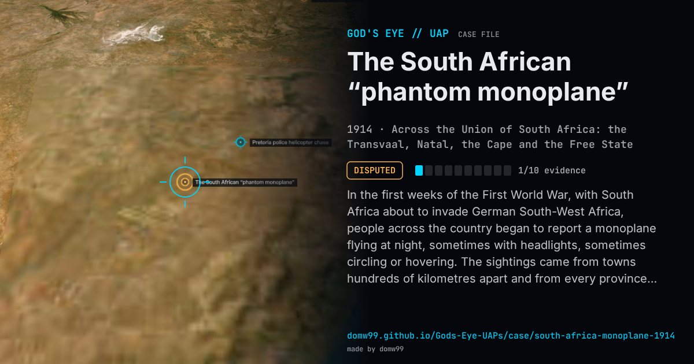

The South African “phantom monoplane”

In the first weeks of the First World War, with South Africa about to invade German South-West Africa, people across the country began to report a monoplane flying at night, sometimes with headlights, sometimes circling or hovering. The sightings came from towns hundreds of kilometres apart and from every province, and newspapers printed dozens of reports between August 11 and September 9, 1914. Many readers assumed a German machine was spying or preparing to bomb; no aircraft was ever found, and the scare ended as suddenly as it began. It is now cited, with the airship scares of the same years, as a classic example of how a war scare turns ordinary night lights into enemy aircraft.
Explanation
At the time it was taken for a German monoplane from South-West Africa on a spy or bombing mission, but the distances from German territory made that unlikely, and no aircraft was ever found. The sociologist Robert Bartholomew studied the episode in 1989 as a case of collective delusion: a war scare in the weeks before the South-West Africa campaign, in which lights in the night sky were read as the lamps of an enemy aircraft.
What was seen
Shape: A monoplane, or its headlights, seen at night and said to manoeuvre
Witnesses: Thousands of people, reported in dozens of articles in the Rand Daily Mail, the Star, the Cape Times, the Cape Argus, the Natal Advertiser and the Pretoria News
Duration: About a month, August 11 to September 9, 1914
Sources
- Bartholomew, “The South African Monoplane Hysteria”, Sociological Inquiry 59 (1989)
- Wikipedia — UFO sightings in South Africa